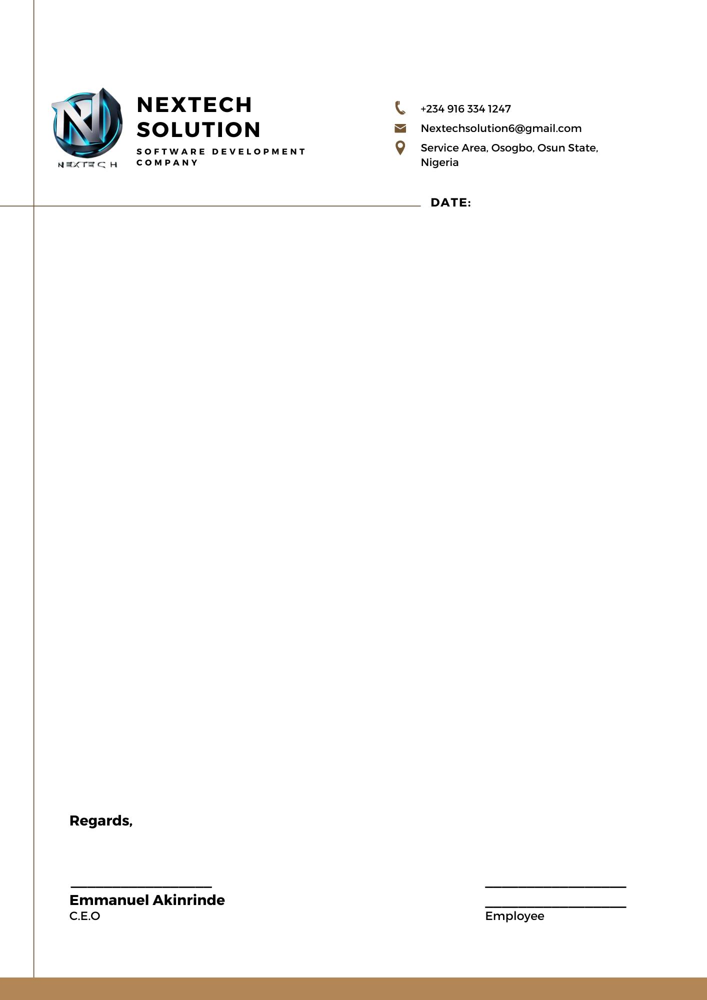

This Employment Contract Agreement is entered into on __________________ between
___________________________________________________________________
located
at
______________________________________________________________,
and
__________________________________________________________________________________.
Employer
agrees
to
employ
Employee
in
the
position
of
a
__________________________________________. Employee's duties and responsibilities shall include
providing _____________________________________________________________________.
Employee's compensation shall be paid upon withdrawal of funds from the Fiverr platform, which typically
occurs 15 days after project acceptance by the Client.
The payment shall be made in _____________unless otherwise agreed upon in writing by both parties.
Upon completion of the assigned tasks, Employee shall notify Employer and request withdrawal of the
funds from Fiverr platform.
Employer agrees to promptly approve the withdrawal request on the Fiverr platform to initiate the
withdrawal process.
Upon successful withdrawal of funds from the Fiverr platform, Employer shall make the payment to
Employee within ______________ days.
The payment shall be made via __________________________, as agreed upon by both parties.
Employee agrees to maintain the confidentiality of any proprietary information, trade secrets, or
confidential materials belonging to the Employer.
This Agreement may be terminated by either party with _________________days written notice to the
other party.
This Agreement shall be governed by and construed in accordance with the laws of Federal Republic of
Nigeria, without regard to its conflict of law principles.
This Agreement constitutes the entire agreement between the parties with respect to the subject matter
hereof and supersedes all prior and contemporaneous agreements and understandings, whether written
or oral.
IN WITNESS WHEREOF, the parties hereto have executed this Agreement as of the Effective Date first
above written.